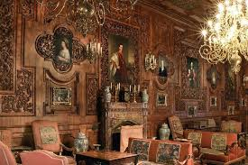

Полная история, архитектура и культурное значение укреплений Средневековья
История замков Средневековья
Опубликовано
Ранние замки (IX-X века)
Первые замки появились в Европе в период раннего Средневековья как необходимость защиты от постоянных набегов викингов и нападений кочевых племен. Они были простыми земляными укреплениями с деревянными палисадами, окружающими небольшой холм (мот-энд-бейли — типичная норманнская конструкция).
Период расцвета (XI-XIII века)
С развитием каменного строительства замки превратились в мощные оборонительные сооружения. Норманны, завоевав Англию в 1066 году, начали строить каменные замки, которые становились символами власти и контроля над землей. Этот период характеризуется появлением массивных донжонов (центральных башен) и первых систематических оборонительных стен.
Позднее Средневековье (XIV-XV века)
По мере развития артиллерии замки трансформировались. Появились бастионы низкой высоты и толстые стены, рассчитанные на выдерживание пушечного огня. Замки постепенно теряли чисто военное значение и становились резиденциями знати, комфортабельными и красивыми сооружениями.
Архитектура средневекового замка
Опубликовано
Основные элементы оборонительной системы
Типичный средневековый замок состоял из нескольких слоев защиты, каждый из которых играл важную роль в его обороне и функциональности. Понимание этих элементов помогает оценить инженерное искусство и стратегическое мышление средневековых строителей.
Элемент
Назначение
Примеры
Кольцевые стены (bailey)
Основная оборона от штурма
Стены Виндзорского замка
Донжон (keep)
Последняя линия защиты и резиденция
Белая башня в Лондоне
Бойницы и амбразуры
Позиции для лучников и воинов
Замок Каркассон
Подъёмный мост
Контроль входа, блокировка в опасности
Многие замки северной Франции
Ров и палисад
Замедление штурма, создание препятствия
Классические мот-энд-бейли
Особенности планировки
Замки редко имели симметричную планировку. Они строились с учетом естественного ландшафта, часто на вершинах холмов или скалах, чтобы максимизировать естественную защиту. Внутренняя планировка была сложной лабиринтом коридоров, которые затрудняли ориентацию для потенциального врага, пробившегося внутрь.
Типичная планировка средневекового замка с обозначением всех основных элементов
Самые знаменитые замки Европы
Опубликовано
Замок Нойшванштайн (Германия)
Построенный в 1869 году королём Людвигом II Баварским, замок Нойшванштайн — это уникальное сочетание готической архитектуры и романтизма XIX века. Хотя он построен позже классического периода Средневековья, он воплощает идеальное представление о средневековом замке и вдохновил архитектуру многих замков Диснея.
Замок Нойшванштайн — самый узнаваемый замок в мире
Башня Лондона (Англия)
Построенная в 1066 году после норманнского завоевания, Башня Лондона — одна из старейших и наиболее хорошо сохранившихся средневековых крепостей в Европе. Белая башня (донжон) остается главным символом королевской власти, а весь комплекс насчитывает около 20 башен, окруженных двойными кольцевыми стенами.
Замок Эдинбург (Шотландия)
Замок Эдинбург, возвышающийся над скотланским городом, считается одним из самых грозных средневековых укреплений в Британии. Его история насчитывает более 900 лет, и он пережил многочисленные осады и реконструкции. Замок остается символом Шотландии и её независимости.
Замок Каркассон (Франция)
Каркассон — один из самых хорошо сохранившихся средневековых городов-крепостей во всей Европе. С его массивными двойными стенами, более чем 50 башнями и четырьмя воротами, Каркассон представляет типичную крепость XIII века и служит живым музеем оборонительной архитектуры Средневековья.
Повседневная жизнь в средневековом замке
Опубликовано
Структура жизни в замке
Замок был не только военным укреплением, но и административным центром, судом, казначейством и местом проживания. Жизнь была строго организована и подчинена военной иерархии.
Основные обитатели замка
Лорд и его семья — проживали в самых комфортных помещениях, часто в отдельной башне
Рыцари и боевая дружина — воины, готовые к защите замка в любой момент
Слуги и ремесленники — повара, кузнецы, плотники, прачки
Монахи или священники — часто проживали в замке или часовне
Купцы и торговцы — приезжали временно для торговли на замковом рынке
Условия проживания
Несмотря на массивность стен и гранитных башен, условия жизни в средневековом замке часто были суровыми. Помещения были холодными и влажными, особенно в нижних этажах. Вентиляция была плохой, а санитарные условия оставляли желать лучшего. Большинство замков не имели центрального отопления, и люди полагались на открытые очаги и камины.

Реконструкция жилого помещения в средневековом замке
Развлечения и культура
Несмотря на суровость жизни, обитатели замков находили время для развлечений. Охота была не только развлечением, но и способом добычи пищи и воспитания боевых навыков. Праздники, музыка трубадуров, рыцарские турниры и охоты были важными событиями, которые собирали благородное сословие.